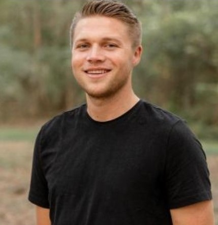

About Me
Hi, I’m Ammon Allen! I’m a Computer Science student at Lamar University driven by a passion for developing innovative solutions to complex challenges. My enthusiasm for programming stems from the incredible ability to transform creative ideas into tangible, real-world applications. By leveraging the power of modern computing and breaking problems down to their most fundamental building blocks, we can create meaningful solutions that truly make a difference.
How Programming Found Me
After high school, I spent several years searching for my identity and purpose, though I didn't realize it at the time. At 24, I took a pivotal step by enrolling in an online program to earn a general college degree, hoping to transform my life—and it did, profoundly. During this journey, I rediscovered my lifelong passion for learning.
In my personal time, I delved into interviews with renowned physicists like Brian Greene, Brian Cox, Richard Feynman, and Roger Penrose. Their remarkable ability to simplify complex problems and explain them in relatable terms deeply inspired me. This inspiration led me to consider studying physics, a field I had always admired. With a more direct path in mind, I enrolled in college at Lamar University to begin my journey. As I researched the educational and career path to becoming a physicicst, I realized that programming skills were essential for conducting research and running simulations.
Driven by this realization, I enrolled in an online course in Computer Science fundamentals. The course provided a fascinating glimpse into the inner workings of the computational systems we often take for granted. Much like the physicists who had inspired me, the course instructors demystified complex concepts, breaking them down into accessible layers of understanding. This transformative experience cemented my decision to change my major to pursue a career in Computer Science, merging my curiosity, problem-solving passion, and newly discovered technical skills into a clear and exciting direction.
Beyond the Code
When I’m not coding, you’ll find me exploring astrophotography and capturing the night sky with my Canon EOS Rebel T6. I love experimenting with creative projects and learning about astronomy.


What I’m Working On
Currently, I’m exploring AI and IoT applications, building this website, and enhancing my skills in C++ and JavaScript. Stay tuned for more updates!
Let’s build something amazing together! Check out my Projects or Get in Touch.